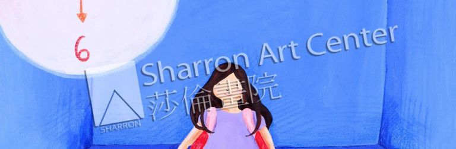

如何挑选申请大学的艺术作品集（一）
＂在一个如往常般的早晨,闹钟已经大声的嘶吼了,却唤不醒沈睡中的小女孩,她的妈妈急着要出门试着要催促她去上学,但她心里已经偷偷决定了,今天不想去上学,一个人在家里一定很好玩! 等妈妈的脚步一离开,她醒了,哇!整个房子都属于她的了,想做什么都可以了!⋯＂
这是一位莎伦画院上海学生在学校的＂创意写作课＂里写的创意小故事。她并且为这个小故事配上了8幅精美绝伦的彩色插图。每一幅插图的角度、用色、技巧、整体构图⋯都花费很多心血精力完成。所有见到的人一定都会＂惊艳＂作品之专业性。把这套作品做为申请大学作品集中的一部分，用做特长加分，效果又会如何呢？
自然是可以的。但是，我们还应该反向审核一下，任何美好事物是否同时会透露出申请者某些隐而未见的不足之处呢？这个缺陷会不会影响到我们所要达成的目标呢？
艺术老师在幇助学生挑选作品的时候，应该从招生官的眼光角度去审视，通过作品，审视学生内在心灵轨迹，思维纹路，从而推断他的素质、潜力。我常说：不要指望招生官怀揣发掘美好人材的美好心怀，实际上，招生官总是习惯性地瞪着一双严苛挑剔的眼睛。他要找到任何他看不顺眼的，找理由把你踹出局，最后剩下来的就是他们要的。
一个没有发展潜力的学生，一定不是名校所要的！
当然，招生官要做到这一点常常可能力不从心，或判断错误，就象风险投资人投资失败、股票经纪人判断失误。名校招生官的眼光与判断能力通常比普通学校独到，但也不能保证招对了学生，更不能保证没有漏掉好学生。
这就给了申请者有翻牌机会。两位资质相当的学生，一位上了常春藤大学，另一位仅仅申请到州立大学，这是常有的事。除了运气之外。不能否认申请策略、方向、包装、心理揣摩、仍至各个细节起到的重大作用。
但是，并不是说草率、随便、缺乏经验和独具眼光的申请包装也一样有用。有另一种说法是，包装完全没有用。这种说法又太偏极了。例如一位天资美女早晨起床污头垢脸见客人，不可能给人留下好印象，而浓装艳抹、搔头挠耳则包装过度甚至吓人。整理、清洁，加上适中的装束、言行举止得体、自然为上策。申请大学的策略、包装也一样，不可顺其自然，也不可让人看出过度美容。
20年的艺术教育、品格训练与申请大学经验中，我们以经验和直觉发掘了许多看似平淡、平凡，甚至平庸的学生，通过长期训练，帮助他们建立自信、成就感、目标方向、整体布局、仍至细节处理。在大学申请过程中才能自然地表现出长处、优势、特点。我们希望学生保留特色、显露潜力，目标不是表现完美。
完美不一定全获加分，也有可能遭减分。如果你在追求完美的过程中，不经意地流露出小心谨慎。过以谨慎会缚束天马行空的创造力。无论未来从事医、法、工、商⋯任何职业都需要胆大心细、大胆拓展，由此而有＂萍果电脑＂和各种诺贝尔奖得主，他们代表了各个行业领域的巅峰！
在上述这位学生的事例处理中，除了给她应有的专业指导和作品挑选之外。我们还给她一些额外的指点。以下是我给她的肯定：＂N的品格、素质、魅力是人中少见的！然而，在完美主义的自我要求中，要做更大突破，不是让自己更完美，而是退一步、舍掉一点，多点直接，少想一点点。由此，她会更加突出她的创造力、魄力！我相信，这只是时间问题，经过历练，她一定会达到这个境界。⋯我如果是常春藤招生官，我一定不要漏掉这个学生！！！她的潜质不在张扬，岂是一、两眼能在沙堆中惊现呢？这就要考验招生官的眼光了。(2015)